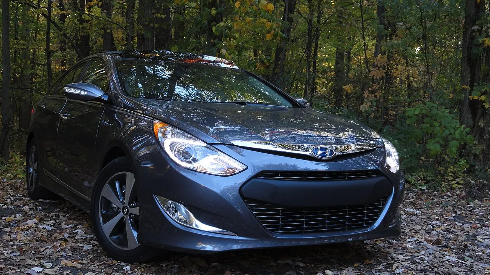

현대차 주식을 볼 때 전기차만 보면 흐름을 놓치기 쉽습니다. 최근 자동차 시장에서는 하이브리드가 소비자의 현실적인 선택지로 커지고 있습니다. 충전 인프라 부담과 가격 저항이 남아 있는 상황에서 하이브리드는 연비와 편의성을 동시에 제공하며 판매 믹스를 지지합니다.
현대차의 이익률은 판매 대수보다 판매 지역과 차종 믹스, 인센티브에 민감합니다. 미국에서 높은 가격을 유지하며 팔 수 있으면 수익성은 좋아지지만, 경쟁이 치열해져 인센티브가 늘면 매출은 유지돼도 이익률은 낮아집니다. 환율은 이익을 돕기도 하지만 원가와 현지 생산 구조를 함께 봐야 합니다.
투자자는 현대차를 단순한 경기민감주로만 보지 말고 제품 믹스와 주주환원, 미국 정책 리스크가 겹친 기업으로 봐야 합니다. 하이브리드 수요가 얼마나 오래 이어지고, 전기차 전환 투자 부담을 얼마나 완화하는지가 핵심입니다.
하이브리드는 시간을 벌어 줍니다

전기차 전환이 예상보다 느려질 때 하이브리드는 판매 공백을 줄입니다.
소비자는 충전 불안을 줄이면서 연비 개선을 얻을 수 있습니다.
기업 입장에서는 기존 생산 역량을 활용해 마진을 방어할 수 있습니다.
하이브리드는 시간을 벌어 줍니다을 볼 때는 숫자 하나를 따로 떼어 보지 않는 편이 좋습니다. 전기차 전환이 예상보다 느려질 때 하이브리드는 판매 공백을 줄입니다. 소비자는 충전 불안을 줄이면서 연비 개선을 얻을 수 있습니다. 기업 입장에서는 기존 생산 역량을 활용해 마진을 방어할 수 있습니다. 이 흐름이 다음 분기에도 이어지는지 확인하면 뉴스의 크기와 실제 투자 가치 사이의 간격을 줄일 수 있습니다.
미국 인센티브가 마진을 가릅니다
미국 판매가 강해도 할인과 금융 조건이 커지면 이익률은 약해집니다.
재고 일수와 딜러 인센티브는 자동차주 실적의 선행 지표입니다.
판매량보다 대당 영업이익이 유지되는지 확인해야 합니다.
이 대목에서는 숫자 하나를 따로 떼어 보지 않는 편이 좋습니다. 미국 판매가 강해도 할인과 금융 조건이 커지면 이익률은 약해집니다. 재고 일수와 딜러 인센티브는 자동차주 실적의 선행 지표입니다. 판매량보다 대당 영업이익이 유지되는지 확인해야 합니다. 이 흐름이 다음 분기에도 이어지는지 확인하면 뉴스의 크기와 실제 투자 가치 사이의 간격을 줄일 수 있습니다.
환율 효과는 생산지와 연결됩니다
원화 약세는 수출 이익에 도움이 되지만 해외 생산 비중이 높으면 효과가 줄어듭니다.
부품 수입과 물류비가 달러로 발생하면 환율 호재가 일부 상쇄됩니다.
환율보다 중요한 것은 지역별 가격 결정력과 제품 믹스입니다.
환율 효과는 생산지와 연결됩니다을 볼 때는 숫자 하나를 따로 떼어 보지 않는 편이 좋습니다. 원화 약세는 수출 이익에 도움이 되지만 해외 생산 비중이 높으면 효과가 줄어듭니다. 부품 수입과 물류비가 달러로 발생하면 환율 호재가 일부 상쇄됩니다. 환율보다 중요한 것은 지역별 가격 결정력과 제품 믹스입니다. 이 흐름이 다음 분기에도 이어지는지 확인하면 뉴스의 크기와 실제 투자 가치 사이의 간격을 줄일 수 있습니다.
전기차 투자는 선택이 아닙니다
하이브리드가 좋아도 전기차 투자를 멈출 수는 없습니다.
배터리 조달, 플랫폼 전환, 미국 현지 생산은 장기 경쟁력의 비용입니다.
투자자는 단기 하이브리드 이익과 장기 전기차 투자를 함께 봐야 합니다.
전기차 투자는 선택이 아닙니다을 볼 때는 숫자 하나를 따로 떼어 보지 않는 편이 좋습니다. 하이브리드가 좋아도 전기차 투자를 멈출 수는 없습니다. 배터리 조달, 플랫폼 전환, 미국 현지 생산은 장기 경쟁력의 비용입니다. 투자자는 단기 하이브리드 이익과 장기 전기차 투자를 함께 봐야 합니다. 이 흐름이 다음 분기에도 이어지는지 확인하면 뉴스의 크기와 실제 투자 가치 사이의 간격을 줄일 수 있습니다.
주주환원은 실적의 결과입니다
높은 배당과 자사주 기대는 현금흐름이 안정적일 때 설득력이 있습니다.
자동차 산업은 재고와 금융 자회사의 신용 위험도 함께 봐야 합니다.
주주환원 정책보다 영업 현금흐름이 먼저 확인돼야 합니다.
이 대목에서는 숫자 하나를 따로 떼어 보지 않는 편이 좋습니다. 높은 배당과 자사주 기대는 현금흐름이 안정적일 때 설득력이 있습니다. 자동차 산업은 재고와 금융 자회사의 신용 위험도 함께 봐야 합니다. 주주환원 정책보다 영업 현금흐름이 먼저 확인돼야 합니다. 이 흐름이 다음 분기에도 이어지는지 확인하면 뉴스의 크기와 실제 투자 가치 사이의 간격을 줄일 수 있습니다.
현대차 주식의 핵심은 전기차와 내연기관 사이에서 하이브리드가 얼마나 좋은 다리 역할을 하느냐입니다. 판매가 늘어도 인센티브가 커지면 이익률은 흔들립니다. 반대로 하이브리드와 SUV 비중이 높고 미국 가격이 유지되면 실적 방어력은 커집니다.
다음 점검표는 하이브리드 판매 비중, 미국 재고와 인센티브, 대당 영업이익, 환율 효과, 주주환원 여력입니다. 이 다섯 가지가 동시에 유지될 때 현대차 주식은 단순 저평가 논리를 넘어 이익 체력으로 평가받을 수 있습니다.
국내 기업 투자는 실적뿐 아니라 환율, 외국인 수급, 지배구조, 주주환원 정책의 영향을 크게 받습니다. 같은 이익 회복이라도 배당과 자사주, 설비투자 계획이 어떻게 배분되는지에 따라 주가 반응은 달라질 수 있습니다.
투자자는 분기 실적의 좋은 숫자만 보지 말고 현금이 실제로 남는지 확인해야 합니다. 재고, 매출채권, 설비투자, 환율 효과를 나눠 보면 이익의 질이 더 잘 보입니다.
마지막으로 전기차 글을 읽을 때는 가격이 먼저 움직인 뒤 이유가 붙는 경우가 많다는 점을 기억해야 합니다. 투자자는 결론을 서둘러 정하기보다 공식 자료, 최근 실적, 현금흐름, 밸류에이션, 시장 기대가 서로 같은 방향인지 차분히 확인하는 편이 좋습니다.
국내 기업 투자는 실적뿐 아니라 환율, 외국인 수급, 지배구조, 주주환원 정책의 영향을 크게 받습니다. 같은 이익 회복이라도 배당과 자사주, 설비투자 계획이 어떻게 배분되는지에 따라 주가 반응은 달라질 수 있습니다.
투자자는 분기 실적의 좋은 숫자만 보지 말고 현금이 실제로 남는지 확인해야 합니다. 재고, 매출채권, 설비투자, 환율 효과를 나눠 보면 이익의 질이 더 잘 보입니다.
마지막으로 투자 글을 읽을 때는 가격이 먼저 움직인 뒤 이유가 붙는 경우가 많다는 점을 기억해야 합니다. 투자자는 결론을 서둘러 정하기보다 공식 자료, 최근 실적, 현금흐름, 밸류에이션, 시장 기대가 서로 같은 방향인지 차분히 확인하는 편이 좋습니다.
이 글의 목적은 정답을 대신 내려 주는 것이 아니라 확인 순서를 줄이는 데 있습니다. 관심 종목이나 상품이 있다면 같은 기준을 표로 옮겨 적고, 다음 실적 발표 때 실제 숫자가 어떻게 변했는지 다시 비교해 보는 방식이 가장 안전합니다.
현대차 주식 하브리드 판매와 미국 인센티브를 같 봐야 합니다를 다시 점검할 때는 한 번의 뉴스보다 여러 분기의 방향이 중요합니다. 숫자가 좋아지는 이유가 가격인지 물량인지, 비용 절감인지 일회성인지 나누어 보면 기대와 현실의 차이를 더 빨리 알아차릴 수 있습니다.
국내 기업 투자는 실적과 수급이 동시에 움직일 때 탄력이 커지는 경우가 많습니다. 이익 전망이 좋아져도 외국인 환헤지 비용이 높거나 주주환원 기대가 약하면 주가 반응이 늦어질 수 있습니다. 따라서 실적표와 수급표를 함께 보는 습관이 필요합니다.
기업별로는 영업이익보다 영업현금흐름을 더 가까이 봐야 합니다. 재고와 매출채권이 늘어나는 회복은 실제 현금 회복이 늦을 수 있습니다. 설비투자가 큰 기업은 이익이 좋아져도 자유현금흐름이 따라오는지 확인해야 합니다.
주주환원은 결과이지 출발점이 아닙니다. 배당과 자사주가 지속되려면 본업의 현금 창출력이 먼저 안정돼야 합니다. 투자자는 주주환원 발표와 함께 투자 계획, 부채, 운전자본 변화를 같이 확인해야 합니다.
또 하나 중요한 점은 기록입니다. 관심 있는 종목이나 상품을 볼 때 오늘의 판단 근거를 짧게 남겨 두면 다음 실적 발표나 시장 변화가 왔을 때 생각이 어떻게 달라졌는지 확인할 수 있습니다. 이 기록은 매수와 매도보다 먼저 투자 습관을 안정시키며, 같은 실수를 반복하지 않게 도와줍니다.
작은 차이를 확인하는 습관이 쌓이면 같은 뉴스에서도 더 침착하게 판단할 수 있습니다.
관련 영상
현대차 하이브리드와 미국 판매 흐름을 분석하는 영상